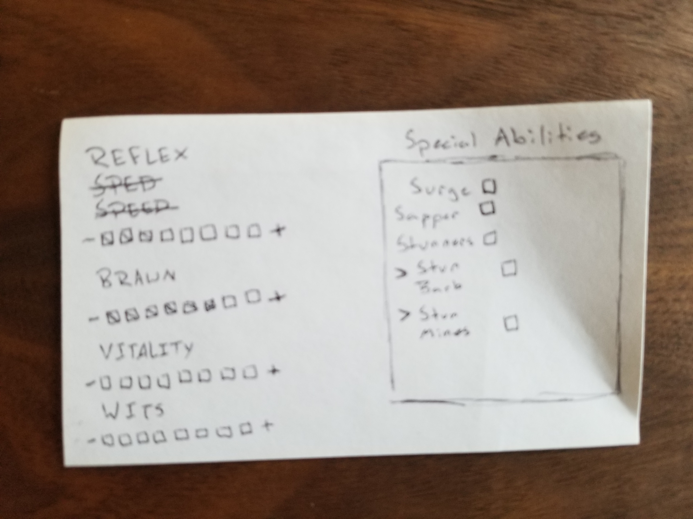
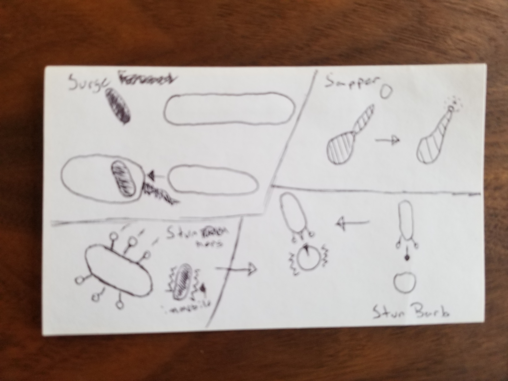
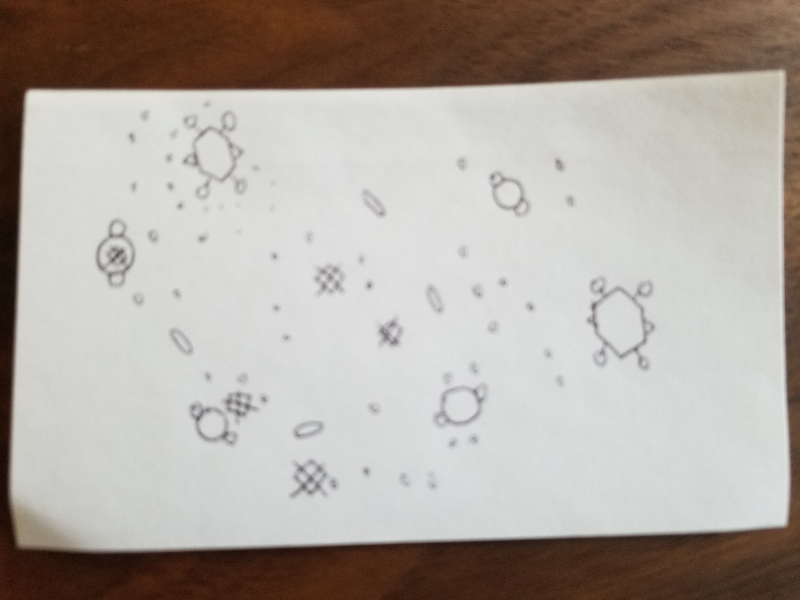

The Spawn of Bact
I. High Concept
Its the bacteria sequence of Spore, but it can be left in a simulation, or a player can takc control of a basteria. A player will be able to upload their own images as well as potentially create their own templates for bascteria. In simulation mode the player can influence the group of creatures by feeding them or pushing them towards one another. This simulation can function similar to The Game of Life
II. Genre
Battle, Simulation, Survival
III. Platform
Desktop only, potentially Mobile-friendly
IV. Story
A small spawn in a big tank, watch life unfold as bacteria spawns battle it out for dominance. With a chance to evolve, its all to play for as bacteria absorb each other and use DNA to grow themselves bigger and more dangerous. The player takes on a role of a small spawn, created through some foul experiment for unkown purposes. The only way to survive is to devour the competition and accrue more powers and skills along the way.
V. Esthetics
Graphical style - Abstract and fairly minimalist
Sound - Fairly retro, chip-based sound predominantly
Sound will happen based on a player's movement, as well as the interactions that are made while in simulation mode each have their own sound effect. Ambient music will play in the background
VI. Gameplay
Mechanics
- The player moves to attempt to absorb other entities, growing larger whenever it consumes smaller ones
- When the player devours everything on a level, it gains points to invest in itself, be it speed, attack, or special abilities.
Controls
- Keyboard for Game Mode, with most of the control limited to WASD/Arrow Keys and the Space Bar
- Mouse for Simulation Mode, with the player tapping on simulation after picking a desired effect to change the simulation
- Potentially: Gesture controls on mobile
Teaching the game/New user experience aka "Onboarding"
The player has a chance to experience how the simulation works before they take control of a spawn, they can see that little spawns get consumed by the bigger spawns.
Player learning
Most Player learning comes from the divergence into playstyles, do they want to take a special ability that gives them a set of spikes that keeps enemies away or pick something that is nimble and fast enough to avoid being absorbed. A few special abilities such as absorb, in which the player ejects a large, but less than half, portion of themselves behind them to rush forward and absorb an entity.
VII. Screenshots
  VIII. Other
Some of the libraries I am considering using for this project are PixiJS as opposed to Canvas, as well as the dat.GUI library for storing simulation controls.
IX. About the developer(s)
Preston Meeks - 4th year Game Design and DevelopmentMajor with a Minor in Anthropology
I'm a jack of all trades, I love messing with a little bit of everything to learn enough to have an understanding of how things work.